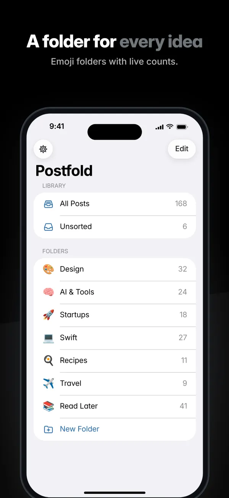
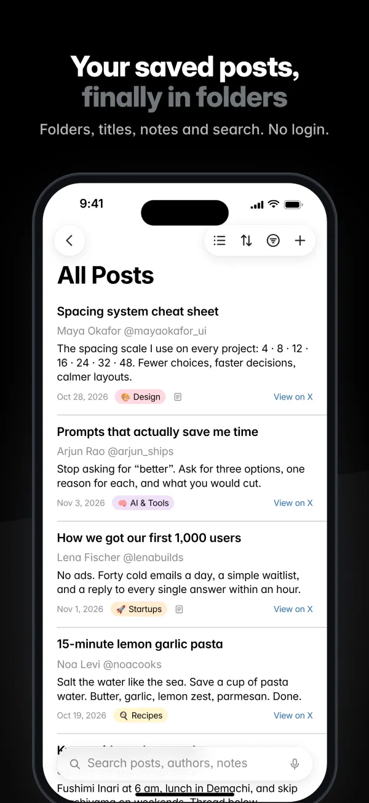
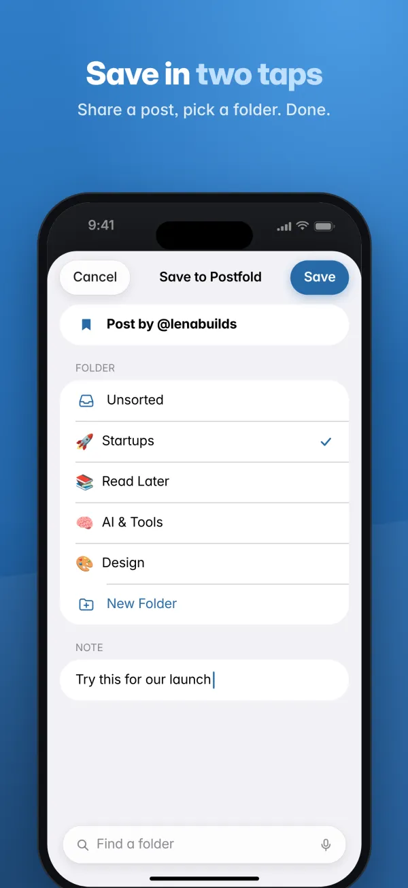

Save in two taps
Share a post from the X app, pick a folder, done. Add a note right in the Share sheet.
For iPhone, iPad and Android
Postfold saves posts from X into folders you create, with your own titles and notes. No login, no account, no server. Your library syncs through your private iCloud.


Bookmark folders on X are a Premium feature. Postfold gives every saved post a home, without signing in to anything.
Features
Folders, titles, notes, sorting and search for the posts you want to come back to.
Share a post from the X app, pick a folder, done. Add a note right in the Share sheet.
Create as many folders as you like, each with its own emoji and color, plus a live post count.
Give posts your own title and a private note, so you remember why you saved them.
Sort by date added, date modified, title, date posted or author. Filter by date range, author, note or status.
Pick the layout that fits the folder. On iPad, folders, posts and details sit side by side.
Search across post text, authors, your titles and your notes.
Your library follows you across iPhone and iPad through your private iCloud. No sign-up.
If a post disappears from X, Postfold marks it Unavailable and keeps your link, title and note.
Open Postfold after copying a post link and a banner offers to save it. The clipboard is only read when you tap Paste.
How it works
In the X app, tap Share on any post and choose Postfold. Or just copy the post's link.
Choose a folder (or create one), add a note if you like, and tap Save.
Open Postfold to sort, filter and search your saves. Tap Open in X to read the post in the X app.

Screenshots
Swipe to see more. Tap a screenshot to enlarge it.
Private by design
Postfold is built so there is nothing to sign in to, and your content never leaves your devices and your iCloud.
Postfold never asks for your X password and never connects to your X account. There is no Postfold account either.
Folders, posts and notes stay on your devices and in your private iCloud. The developer cannot see them.
Postfold shows ads from Google AdMob. Advertisers never receive your posts, notes or folders, and you choose whether ads can be personalized. Crash reports come only through Apple's built-in tools, and you can turn them off.
FAQ
No. Postfold has no login of any kind: it never connects to your X account and there is no Postfold account. You save a post by sharing it from the X app or by pasting its link.
No. Because Postfold never signs in to X, it cannot read your X bookmarks. You add posts one at a time, from the Share sheet or by pasting a link.
In the X app, tap Share on a post, then choose Postfold. Pick a folder, add a note if you like, and tap Save. You can also copy a post link and open Postfold: a banner offers to save it, or you can paste it on the Add screen.
Yes. Postfold syncs through your own private iCloud, so every device signed in to the same Apple Account sees the same folders, posts and notes. If iCloud is turned off, everything stays on that device.
Postfold re-checks saved posts from time to time. If a post is no longer available, it is marked Unavailable and its cached text is removed. Your link, custom title, note and folder are kept.
Not your content. Your posts, notes and folders stay on your devices and in your private iCloud, and they are never shared with advertisers. Postfold shows ads from Google AdMob, which uses device data such as your IP address, how you interact with ads and, if you allow tracking, your device's advertising identifier. To fix bugs, we receive anonymous crash reports and usage statistics through Apple's built-in tools. You can turn them off in Postfold's Settings and in iOS Settings. The Privacy Policy has the details.
Yes. Postfold runs on iPhone and iPad with iOS 18 or later. On iPad you see folders, posts and the post itself side by side.
Any price or in-app purchase is shown on the App Store listing before you download or buy.
No. Postfold is an independent app and is not affiliated with, endorsed by, or sponsored by X Corp.